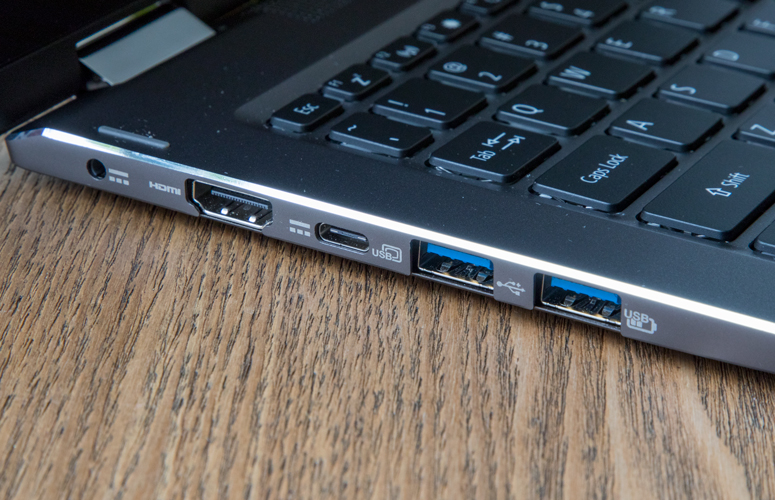

Với mức giá khoảng 21,5 triệu đồng, Acer Spin 5 vượt mặt nhiều đối thủ cùng loại về giá cả nhưng có cấu hình mạnh mẽ với CPU Intel Core i5 thế hệ thứ 8, thiết kế đẹp, màn hình hiển thị tươi sáng, cùng bàn phím bấm rất thoải mái.
Nhìn từ trên xuống, ta thấy Acer Spin 5 có thiết kế khá đơn giản, trông giống như một phiến kim loại hình chữ nhật làm bằng nhôm . Nhưng vỏ ngoài của chiếc laptop là làm bằng kim loại thực sự, bạn yên tâm bởi nó không phải “nhựa mạ bạc” đâu. Nhìn kĩ thì sẽ thấy mặt nắp của laptop có các viền sọc mờ xen kẽ, tạo độ nhám. Biểu tượng của Acer nằm ở chính giữa, trông khá phù hợp với nền xám của mặt nắp.
Sau khi mở máy ra, ta thấy đập vào mắt là viền màn hình khá dày, với gu thẩm mĩ hiện nay của đa số người dùng thì nó có vẻ khá là xấu xí. Bàn phím có màu đen và mặt xung quanh là màu xám giống như phần nắp của máy, tuy nhiên kết cấu trông khá thô cứng. Logo Acer màu trắng được in ở phần viền màn hình phía dưới, làm dòng chữ trông nổi bật hơn. Trong quá khứ, biệt danh mà chỉ đơn thuần là in trên boong tàu.
Đầu đọc dấu vân tay được đặt trên góc bên trái của touchpad. Mang 1 màu đen nổi bật trên nền màu xám của touchpad, và được đặt nổi lên 1 chút, người dùng sẽ dễ dàng chạm thấy nó và sử dụng mà không cần nhìn.
Với kích thước 12,8 x 8,9 x 0,6 inch và nặng khoảng 1.54 kg , Acer Spin 5 có thể nói là khá nặng so với vẻ bên ngoài . Trong khi của Dell Inspiron 13 5000 2-trong-1 là một chiếc laptop tương tự với kích thước 12,8 x 9,9 x 0,8 inch nhưng chỉ nặng hơn Acer Spin 5 có 45g. Hay chiếc Lenovo Yoga 720 13-inch chỉ nặng 1,26 kg với kích thước gần tương đương 12,2 x 8,4 x 0,6 inch.
Phía bên trái của chiếc laptop, ta sẽ tìm thấy jack nguồn, 1 cổng HDMI, 1 khe cắm USB Type-C và 2 cổng USB 3.0 .
Ở cạnh bên phải có 1 jack cắm tai nghe, 1 khe cắm thẻ SD, 1 cổng USB 2.0 và 1 khe cắm khóa Kensington.